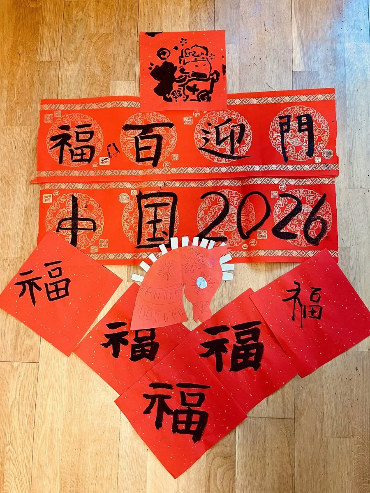

Kinesiskt nyår 2026
I februari 2026 välkomnade vi Hästens år tillsammans i Nynäshamn. Vi prövade på kinesisk kalligrafi och skrev tecknet 福 (lycka) och nyårshälsningar med pensel och tusch på rött papper. Vi pysslade också hästar i papper och pratade om traditionerna kring vårfesten.
Bilder och mer information finns på vår Facebook-sida.